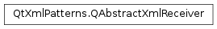

QAbstractXmlReceiver¶
Inherited by: QXmlSerializer, QXmlFormatter
Detailed Description¶
-
class
PySide2.QtXmlPatterns.QAbstractXmlReceiver¶
-
PySide2.QtXmlPatterns.QAbstractXmlReceiver.atomicValue(value)¶ Parameters: value – object
-
PySide2.QtXmlPatterns.QAbstractXmlReceiver.attribute(name, value)¶ Parameters: - name –
PySide2.QtXmlPatterns.QXmlName - value –
PySide2.QtCore.QStringRef
- name –
-
PySide2.QtXmlPatterns.QAbstractXmlReceiver.characters(value)¶ Parameters: value – PySide2.QtCore.QStringRef
-
PySide2.QtXmlPatterns.QAbstractXmlReceiver.comment(value)¶ Parameters: value – unicode
-
PySide2.QtXmlPatterns.QAbstractXmlReceiver.endDocument()¶
-
PySide2.QtXmlPatterns.QAbstractXmlReceiver.endElement()¶
-
PySide2.QtXmlPatterns.QAbstractXmlReceiver.endOfSequence()¶
-
PySide2.QtXmlPatterns.QAbstractXmlReceiver.namespaceBinding(name)¶ Parameters: name – PySide2.QtXmlPatterns.QXmlName
-
PySide2.QtXmlPatterns.QAbstractXmlReceiver.processingInstruction(target, value)¶ Parameters: - target –
PySide2.QtXmlPatterns.QXmlName - value – unicode
- target –
-
PySide2.QtXmlPatterns.QAbstractXmlReceiver.startDocument()¶
-
PySide2.QtXmlPatterns.QAbstractXmlReceiver.startElement(name)¶ Parameters: name – PySide2.QtXmlPatterns.QXmlName
-
PySide2.QtXmlPatterns.QAbstractXmlReceiver.startOfSequence()¶
-
PySide2.QtXmlPatterns.QAbstractXmlReceiver.whitespaceOnly(value)¶ Parameters: value – PySide2.QtCore.QStringRef
© 2018 The Qt Company Ltd. Documentation contributions included herein are the copyrights of their respective owners. The documentation provided herein is licensed under the terms of the GNU Free Documentation License version 1.3 as published by the Free Software Foundation. Qt and respective logos are trademarks of The Qt Company Ltd. in Finland and/or other countries worldwide. All other trademarks are property of their respective owners.